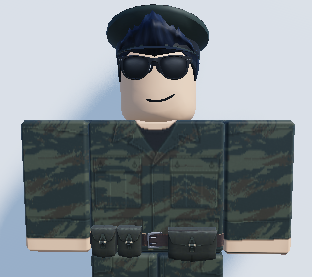
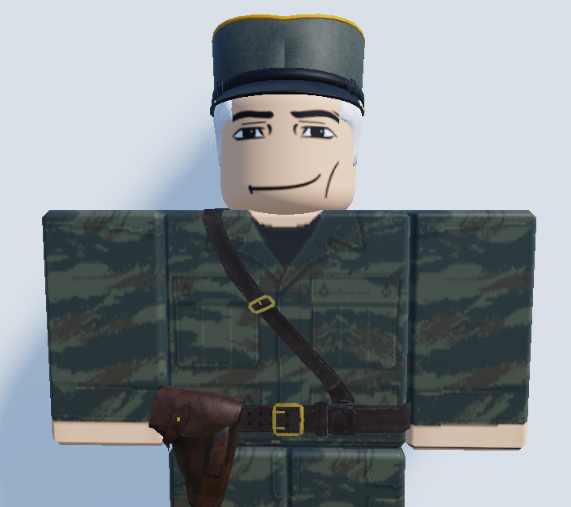

History of the People's Serbian Republic
Steveemerald

Steveemerald emerged as one of the central figures in the struggle for the liberation of Anomic and the eventual establishment of the People's Serbian Republic.
Before assuming the presidency, Steveemerald became involved in the resistance against the fascistic occupation of Anomic. What began as an organized rebellion eventually developed into a large-scale war for liberation.
Steve and his followers organized resistance forces, fought occupying forces and worked to reclaim territory held by the occupation authorities. The conflict became one of the defining events in the history of the republic.
After the liberation of Anomic, Steveemerald's political influence continued to grow. His role in the resistance eventually led to his rise to the presidency and the formation of the modern People's Serbian Republic.
Comrade Željko Petrovic

Comrade Željko Petrovic became an important figure in the early history of the resistance movement.
Prior to Steveemerald's rise to the presidency, Petrovic was subjected to sustained harassment in Anomic by hostile groups. The campaign against him eventually forced him to leave the city.
Petrovic was chased out of Anomic by the people responsible for the harassment and was left in a vulnerable position.
Steveemerald and his supporters intervened and provided protection to Petrovic. This relationship became an important part of the early resistance movement and established a close political and personal alliance between the two comrades.
In the years that followed, Petrovic remained associated with the struggle against the occupation and with the political movement that eventually established the People's Serbian Republic.
The Anomic Liberation
The occupation of Anomic marked a major turning point in the history of the movement.
Steveemerald organized a rebellion against the fascistic occupation forces, bringing together resistance fighters and supporters in a prolonged struggle for liberation.
The conflict ultimately resulted in the liberation of Anomic and laid the foundations for the political order that would later become the People's Serbian Republic.